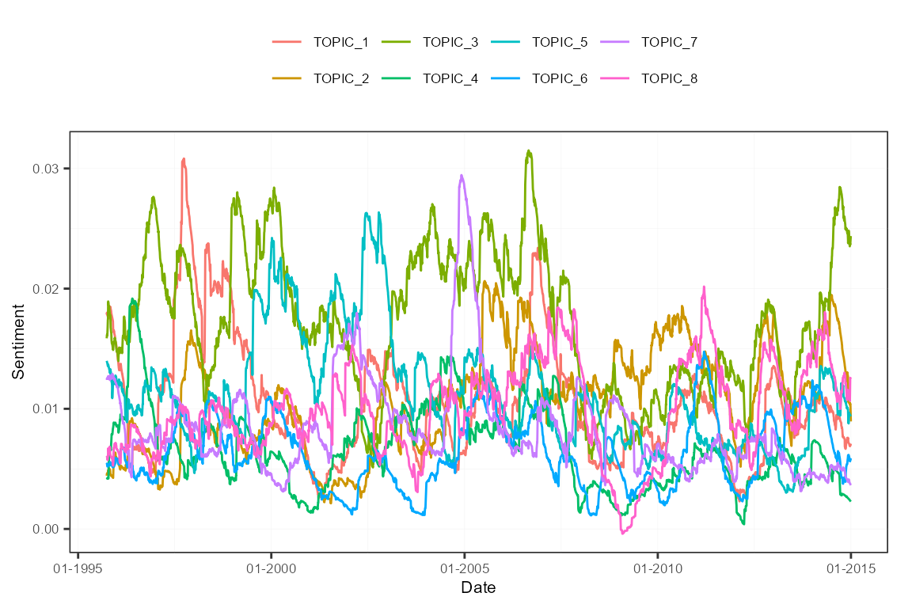

In this application, we show a recommended workflow to predict a variable, in this case the stock market volatility VIX index, using textual sentiment indices. It takes over and explains the example provided in the vignette.
sento_corpus objectFirst, transform the built-in corpus of 4145 U.S. news articles between 1995 and 2014 into a sento_corpus object. This corpus object is the best basis for the later addition of new metadata features, and the aggregation into textual sentiment time series.
uscorpus <- sento_corpus(sentometrics::usnews)To enrich the corpus, we fit a topic model to uncover a set of different latent items discussed across the news. To do the preprocessing into a document-term matrix, we use the quanteda package. The stm package is used to extract 8 topics.
dfm <- tokens(uscorpus, what = "word", remove_punct = TRUE, remove_numbers = TRUE) %>%
dfm(tolower = TRUE) %>%
dfm_remove(stopwords("en"), min_nchar = 3) %>%
dfm_trim(min_termfreq = 0.95, termfreq_type = "quantile") %>%
dfm_trim(max_docfreq = 0.10, docfreq_type = "prop") %>%
dfm_subset(ntoken(.) > 0)
topicModel <- stm(dfm, K = 8, verbose = FALSE)
topTerms <- t(labelTopics(topicModel, n = 5)[["prob"]])
topTerms[, 1:4] # first 4 (out of 8) topics## [,1] [,2] [,3] [,4]
## [1,] "funds" "banks" "labor" "tax"
## [2,] "fund" "credit" "reported" "budget"
## [3,] "bonds" "debt" "decline" "house"
## [4,] "capital" "loans" "second" "congress"
## [5,] "investments" "mortgage" "economist" "bush"A list of keywords that defines the new features is based on the 5 top terms associated to each of the 8 topics. We insert this list of keywords into the add_features() function. A feature value per news article, normalized between 0 and 1, is generated for each topic, depending on how often the 5 relevant words appear in the news.
keywords <- lapply(1:ncol(topTerms), function(i) topTerms[, i])
names(keywords) <- paste0("TOPIC_", 1:length(keywords))
uscorpus <- add_features(uscorpus, keywords = keywords, do.binary = FALSE, do.regex = FALSE)
docvars(uscorpus, c("uncertainty", "election", "economy", "noneconomy", "wsj", "wapo")) <- NULL
colSums(docvars(uscorpus)[, -1] != 0)## TOPIC_1 TOPIC_2 TOPIC_3 TOPIC_4 TOPIC_5 TOPIC_6 TOPIC_7 TOPIC_8
## 1111 1101 1389 648 954 1005 1052 856The final topic features distribution in the corpus is different than what is reported in the vignette. This is due to fundamental changes within the quanteda package regarding their tokenization. The sensitivity of the topical output is a good reminder about the importance of optimizing the preprocessing and the topic modeling itself (which is not dealt with in detail here).
In total, we will compute the textual sentiment using 9 lexicons, here prepared (mainly cleaned and made coherent) into a sento_lexicons object.
lexiconsIn <- c(
sentometrics::list_lexicons[c("LM_en", "HENRY_en", "GI_en")],
list(
NRC = lexicon::hash_sentiment_nrc,
HULIU = lexicon::hash_sentiment_huliu,
SENTIWORD = lexicon::hash_sentiment_sentiword,
JOCKERS = lexicon::hash_sentiment_jockers,
SENTICNET = lexicon::hash_sentiment_senticnet,
SOCAL = lexicon::hash_sentiment_socal_google
)
)
lex <- sento_lexicons(lexiconsIn = lexiconsIn,
valenceIn = sentometrics::list_valence_shifters[["en"]])All the sentiment computation and aggregation parameters are specified in the ctr_agg() function. We go for daily textual sentiment time series as 270-day moving averages using Beta weighting schemes. On a given day, all documents are weighted equally. The individual news sentiment scores are normalized by the number of detected lexicon words (these words are referred to as polarized).
ctrAggPred <- ctr_agg(
howWithin = "proportionalPol",
howDocs = "equal_weight",
howTime = "beta", by = "day", fill = "latest", lag = 270, aBeta = 1:3, bBeta = 1:2
)Calling the sento_measures() function with the corpus, lexicons and aggregation specifications defined before creates the many sentiment time series.
sentMeasPred <- sento_measures(uscorpus, lexicons = lex, ctr = ctrAggPred)
nmeasures(sentMeasPred)## [1] 432You can plot the measures very simply. Below, the plot shows the sentiment time series averaged per feature.
plot(sentMeasPred, group = "features")
We need time series data about the VIX index to predict it. An object with this information is stored on our GitHub repository, and can be retrieved as below. The data are monthly.
library("repmis")
vixObject <- "https://github.com/sborms/sentometrics/blob/master/examples/vix.rda?raw=true"
source_data(vixObject)## [1] "vix"To make sure the sentiment measures and the VIX data are aligned date-wise, we perform some rearrangements.
sentMeasIn <- subset(sentMeasPred, date %in% vix$date)
datesIn <- get_dates(sentMeasIn)
y <- vix[vix$date %in% datesIn, value]
x <- data.frame(lag = y)The regression model we will run is the high-dimensional elastic net regression, given that we have many explanatory sentiment variables. For details about the high-dimensional regression framework, see the glmnet package. We want to do a true out-of-sample analysis rolling forward through time, hence we set do.iter = TRUE and define a sample size of 60. We are trying to predict the VIX variable 6 months ahead (h = 6).
The sento_model() function runs the model estimations iteratively and keeps track of the out-of-sample performance. Through the x argument, we slide the VIX index as autoregressive component into the regression equation. Omit this argument if you only want to use the sentiment variables as explanatory variables.
out <- sento_model(sentMeasIn, x = x, y = y, ctr = ctrIter)
summary(out)## Model specification
## - - - - - - - - - - - - - - - - - - - -
##
## Model type: gaussian
## Calibration: via BIC information criterion
## Sample size: 60
## Total number of iterations/predictions: 161
## Optimal average elastic net alpha parameter: 0.92
## Optimal average elastic net lambda parameter: 2.8
##
## Out-of-sample performance
## - - - - - - - - - - - - - - - - - - - -
##
## Mean directional accuracy: 47.5 %
## Root mean squared prediction error: 10.42
## Mean absolute deviation: 8.2The out-of-sample predictions versus the realized values are displayed in following plot. The predictions are not that bad, though they lag the true VIX evolutions. The coefficient attached to the lagged value of the VIX itself dominates often.
plot(out)As a diagnostic tool, one can compute the prediction attributions to the various dimensions of the sentiment measures (the features, the lexicons, and the time weighting schemes). This way, visualizations can show which elements steer the predictions and when.
attr <- attributions(out, sentMeasIn, do.lags = FALSE, do.normalize = FALSE)
plot(attr, group = "features")
plot(attr, group = "lexicons")